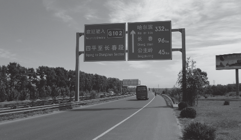
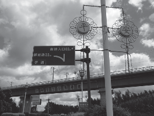
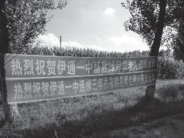
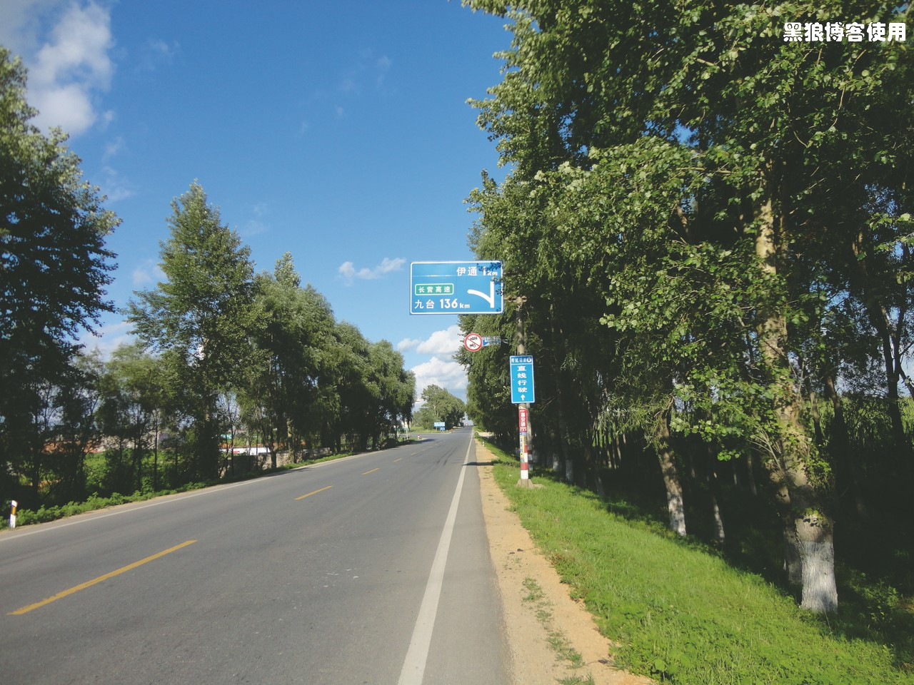

骑行长春（第七天，胜利到达伊通县）
黑狼语录：
- 因为我还有冲动，所以才有了这次旅程
- 因为我还有冲动，所以能完成这次旅程
昨天有四平老同学照顾，找宾馆节约了不少时间，晚上吃的也很丰盛，今天精神状态非常好，热情高涨。中午到老怀弟弟小怀的加油站，他现在荣升站长了，可惜我是自行车，要不可以去揩点油了，哈哈。
老同学陪我吃完早饭，非要把我送回去，哈哈，这不是害我吗！
照例 8:10 左右出发，今天的距离大约是 120 公里，算是比较轻松的一天了。
8:40 左右，看到 G102 指示牌，离公主岭 45 公里。
11:49 看到了第一个有伊通的标志牌，跑了 61 公里。
在G102 马上到公主岭的地方，居然看到了一个正在收费的收费站，挺不和谐的，哈哈，因为一路上，这是第一个，也是最后一个，希望尽早被和谐掉。
四平老同学说到小怀加油站估计有 50 多公里吧，下了G102 后，经过一个大下坡就到了。结果，我跑了 74 公里，先经过了 3 个大上坡，才在一个大下坡后，在 12:25 终于赶到了小怀的加油站附近，又累又饿，直奔饭馆。
酒足饭饱，出门已经是下午 14 点了。小怀太热情，今天破例喝了 2 瓶啤酒，前几天都是 1 瓶。目的地伊通县还有 35 公里，不用太着急赶路了。
每到下午 15 点到 16 点，都是我精疲力竭的时候。
15:52 骑行了 99 公里， 在大孤山粮库附近，看到路旁的大幅祝贺标语，我的母校伊通一中有人上了清华，算是个大事件了，来张照片祝贺一下吧。
大孤山的这段路，明明看着好像没有坡，但骑着自行车很累，应该是个缓慢的上坡。
17:00 到达伊通县城，今天骑行了 114 公里。
到达伊通县，总共骑行了大约 1070 公里。
回到了最美丽的家乡（尽管没什么风景，但在我眼中全是风景），心情和身体都很放松，休整几天，再去长春。